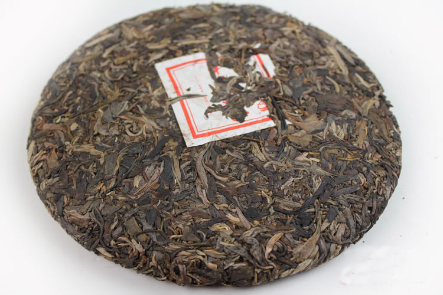

Pu-erh
Pu-erh is a very unique type of tea in the sense that it is allowed to ferment. pu-erh is proccesed the same way as other teas, but is packed into tight bricks and left the ferment. The optimal time left to ferment is about 25 years, Though in Recent years they have changed the process to speed up the fermentation.
